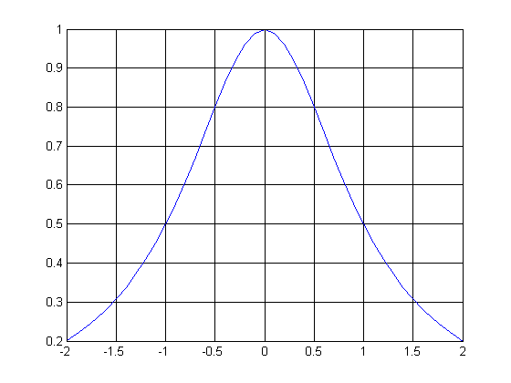
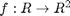
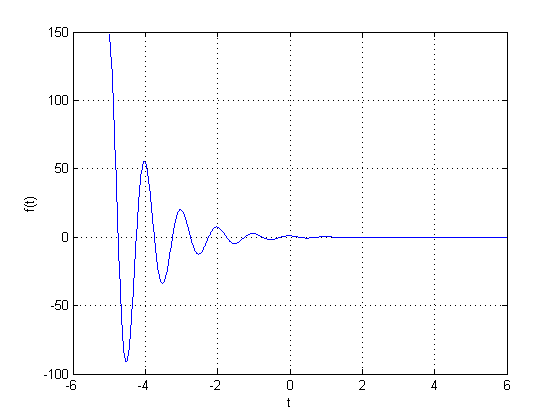
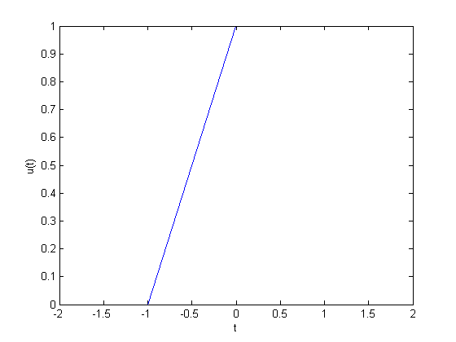
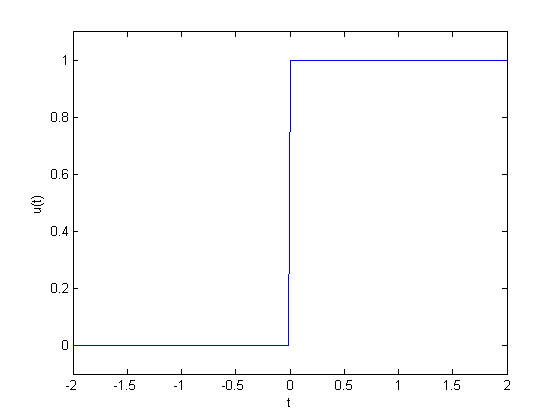
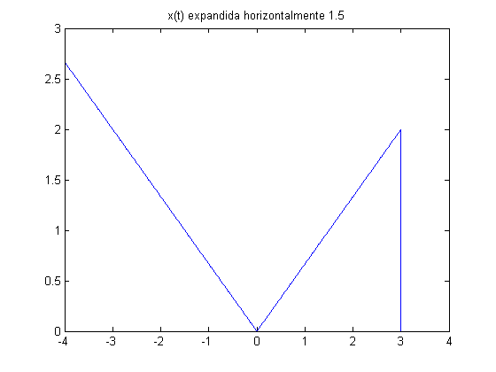
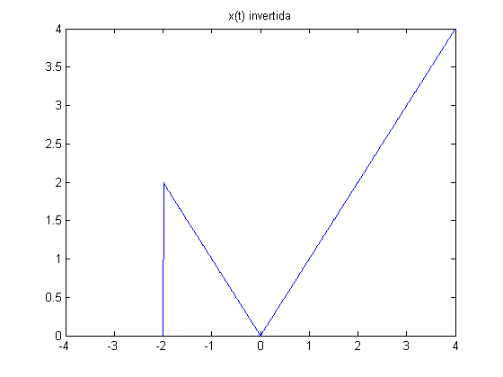
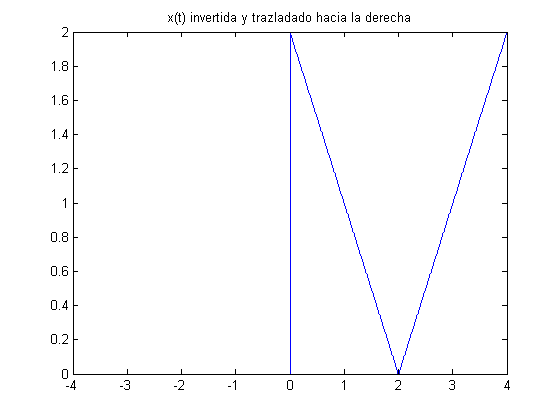
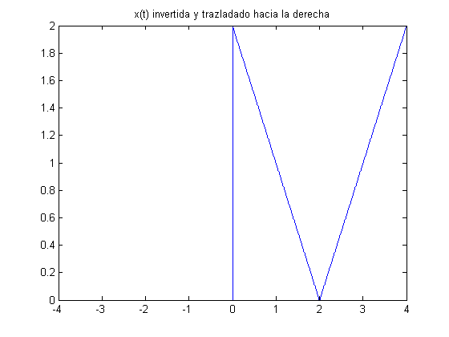

Práctica 2: Señales continuas
Kevin Rosario Chavez 2MV1
Contents
Descripción general de MATLAB
En los años 70 cleve moler desarrollo la primera version de Matlab -Matrix Laboratory- para calcular matices de una forma simple e interactiva, con el fin de que sus estudiantes pudieran trabajar con matrices sin tener que usar fortran. En 1984 jack litle rediseño y mejoro matlab haciéndolo disponible en la nueva computadora de IBM , el y moler fundaron matworks .EL objetivo de todos estos programas es facilitar el uso de las herramientas computacionales para estudiantes investigadores académicos y cualquier otra persona con las ganas de aprender.El propoito es invertir mas tiempo en el desarrollo de la idea que en entender como programar.
Desarrollo
1 .Crea una función que se llame fun1 y reciba dos parametros y  la función debe regresar la evaluación , esta función debe trabajr con y . Debe mostrar su código en el reporte (sin ejecutar).
la función debe regresar la evaluación , esta función debe trabajr con y . Debe mostrar su código en el reporte (sin ejecutar).
function f=fun1(a,w) f=a^2/(a^2+w^2) end
2 .Construya una función que gráfique funciones de en el formato de su elección y pruebe su código mostrando la gráfica de  vs en el intervalo para , no debe incluir el código, solo el uso de la función para mostrar la gráfica
vs en el intervalo para , no debe incluir el código, solo el uso de la función para mostrar la gráfica
fa= @(a,w) a./(a.^2+w.^2); w=-2:0.1:2; figura(w,fa(1,w))
3 .Construya una función que gráfique funciones de  en el formato de su elección y pruebe su código mostrando la gráfica de la transformada de Fourier en de la función , puede utilizar una función anonima para este fin, no debe incluir el código, solo el uso de la función para mostrarla gráfica. Reporte la gráfica de de ![$[-1,5]$](ASySPrac2KevinRosario_eq82800.png) (recuerde que ya tiene una función para esto). Reporte del espectro de magnitud y del espectro de fase en (puedes con sultar con help la descripción de abs, angle, atan2). Solo reporte las graficas.
(recuerde que ya tiene una función para esto). Reporte del espectro de magnitud y del espectro de fase en (puedes con sultar con help la descripción de abs, angle, atan2). Solo reporte las graficas.
ga=@(a,w) -w./(a.^2+w.^2);
w=-2:0.1:2;
plot3(1./w,cos(1./w),-sin(1./w))
%
4 .Realiza las mismas operaciones que Lathi en las secciones M1.1 a M1.4 que se encuentra al final del capítulo 1 y antes de la sección de problemas, cambie los inline por funciones anonimas
M1.1
f = @(t) exp(-t).*cos(2*pi*t) t=0; f(t) t=(-2:2); f(t) figure plot(t,f(t)) xlabel('t') ylabel('f(t)') grid t = (-5:0.01:6); figure plot(t,f(t)) xlabel('t') ylabel('f(t)') grid
f =
@(t)exp(-t).*cos(2*pi*t)
ans =
1
ans =
7.3891 2.7183 1.0000 0.3679 0.1353
 M1.4
u = @(t)t>=0 t = (-2:2); figure plot (t,u(t)) xlabel('t') ylabel('u(t)') t = (-2:0.01:2); figure plot (t,u(t)) xlabel('t') ylabel('u(t)') axis ([-2 2 -0.1 1.1])
u =
@(t)t>=0
  5 .Resuelve el problema 1.2.2 usando las herramientas del paso anterior.
x = @(t) t.*(u(t)-u(t-2)-u(t+4)+u(t)); t = (-4:.01:4); figure plot(t,x(t)) axis auto title('x(t)') figure plot(t,x(t-4)) axis auto title('x(t) desfasada a la izq') figure plot(t,x(t/1.5)) axis auto title('x(t) expandida horizontalmente 1.5') figure plot(t,x(-t)) axis auto title('x(t) invertida') figure plot(t,x(2*t-4)) axis auto title('x(t) comprimita y trazladado hacia la derecha') figure plot(t,x(2-t)) axis auto title('x(t) invertida y trazladado hacia la derecha') 
 
 6 .Escriba una función que se llame energia que reciba como argumento una función (anonima o simbolica) y que regrese el calculo de la energía, para esto puede resultar útil investigar las instrucciones int , integral Se presupone utilizar el código solo con funciones de energia. Muestre el código sin ejecutar, y posteriormente resuelva el problema 1.1.3
function E= ENERGIA(f) s=abs(f).^2; E = integral(s,-inf,inf); end
Figura a
t=0:.01:2; f1= @(t)(u(t)-u(t-2)); f2=@(t)(u(t)-u(t-1))-(u(t-1)-u(t-2)); f3=@(t) f1(t)+f2(t) ENERGIA(f3) figure plot(t,f3(t)) grid on axis ([-0.1 2.1 -0.1 2.1]) f4=@(t) f1(t)-f2(t) figure plot(t,f4(t)) grid on axis ([-0.1 2.1 -0.1 2.1]) ENERGIA(f4)
f3 =
@(t)f1(t)+f2(t)
ans =
2.0000
f4 =
@(t)f1(t)-f2(t)
ans =
2.0000
Figura b
t=0:.01:2*pi; f1= @(t)sin(t).*(u(t)-u(t-2*pi)); f2=@(t)u(t)-u(t-2*pi); f3=@(t) f1(t)+f2(t); ENERGIA(f3) figure plot(t,f3(t)) grid on axis ([-0.1 7.5 -0.1 2.1]) f4=@(t) f1(t)-f2(t) figure plot(t,f4(t)) grid on axis ([-0.1 7.5 -2.1 0.1]) ENERGIA(f4)
ans =
6.2832
f4 =
@(t)f1(t)-f2(t)
ans =
-6.2832
Figura c
t=0:.01:pi; f1= @(t)sin(t).*(u(t)-u(t-pi)); f2=@(t)u(t)-u(t-pi); f3=@(t) f1(t)+f2(t); ENERGIA(f3) figure plot(t,f3(t)) grid on axis ([-0.1 3.3 -0.1 2.1]) f4=@(t) f1(t)-f2(t) figure plot(t,f4(t)) grid on axis ([-0.1 3.3 -1.1 0.1]) ENERGIA(f4)
ans =
5.1416
f4 =
@(t)f1(t)-f2(t)
ans =
-1.1416
7. Escriba una función que se llame potencia que reciba como argumento una función (anonima o simbolica) y que regrese el calculo de la potencia para esto puede resultar útil investigar las instrucciones int , integral Se presupone utilizar el código solo con funciones de potencia. Muestre el código sin ejecutar, y posteriormente resuelva el problema 1.1.4
function P= Potencia(f) s=abs(f).^2; E = integral(s,-inf,inf); end